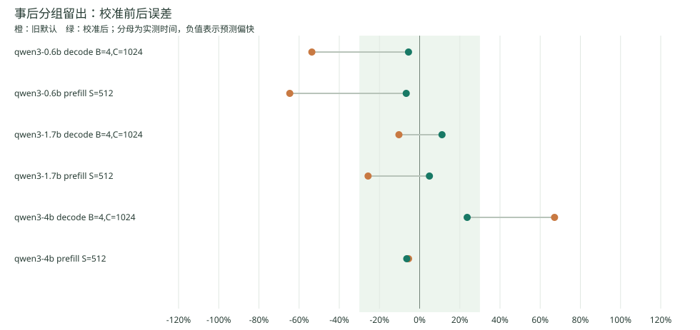

主留出判定：PASS；覆盖 684/684 步。
这是事后按形状和独立采集进程分组的留出。全部18点汇总此前已被查看，不是新盲测。步骤嵌套于采集进程，不是同等数量的独立硬件试验。
主留出等权分组 MAPE：旧默认 37.82% → 校准 9.72%。阈值在拟合前冻结为 30%。

| 模型/阶段/形状 | 分组 | 步数 | 实测 ms | 旧默认 ms | 校准 ms | 校准误差 | 判定 |
|---|---|---|---|---|---|---|---|
| qwen3-0.6b decode B=4,C=1024 | holdout | 128 | 11.899 | 5.515 | 11.239 | -5.54% | PASS |
| qwen3-0.6b prefill S=512 | holdout | 100 | 21.868 | 7.733 | 20.407 | -6.68% | PASS |
| qwen3-1.7b decode B=4,C=1024 | holdout | 128 | 13.993 | 12.550 | 15.551 | +11.13% | PASS |
| qwen3-1.7b prefill S=512 | holdout | 100 | 26.401 | 19.625 | 27.685 | +4.87% | PASS |
| qwen3-4b decode B=4,C=1024 | holdout | 128 | 16.430 | 27.462 | 20.317 | +23.66% | PASS |
| qwen3-4b prefill S=512 | holdout | 100 | 48.367 | 45.703 | 45.266 | -6.41% | PASS |
| qwen3-0.6b decode B=1,C=1024 | repeats | 128 | 10.537 | 4.389 | 10.889 | +3.34% | PASS |
| qwen3-0.6b decode B=16,C=1024 | repeats | 128 | 13.047 | 10.027 | 12.643 | -3.10% | PASS |
| qwen3-0.6b prefill S=128 | repeats | 100 | 21.549 | 4.614 | 16.416 | -23.82% | PASS |
| qwen3-0.6b prefill S=2048 | repeats | 100 | 47.747 | 29.877 | 53.278 | +11.58% | PASS |
| qwen3-1.7b decode B=1,C=1024 | repeats | 128 | 15.237 | 11.419 | 15.214 | -0.15% | PASS |
| qwen3-1.7b decode B=16,C=1024 | repeats | 128 | 17.527 | 17.084 | 16.902 | -3.57% | PASS |
| qwen3-1.7b prefill S=128 | repeats | 100 | 21.995 | 11.873 | 19.913 | -9.46% | PASS |
| qwen3-1.7b prefill S=2048 | repeats | 100 | 86.033 | 74.528 | 87.507 | +1.71% | PASS |
| qwen3-4b decode B=1,C=1024 | repeats | 128 | 15.187 | 25.997 | 19.344 | +27.38% | PASS |
| qwen3-4b decode B=16,C=1024 | repeats | 128 | 21.608 | 33.335 | 24.216 | +12.07% | PASS |
| qwen3-4b prefill S=128 | repeats | 100 | 26.086 | 27.078 | 27.880 | +6.88% | PASS |
| qwen3-4b prefill S=2048 | repeats | 100 | 188.984 | 182.384 | 187.849 | -0.60% | PASS |
固定项是经验上未建模工作，不是直接测得的 CPU 时间。GPU 分量与整步墙钟来自不同采集渠道；Graph 只绑定已记录的配置模式，逐步实际分派未观测。Decode profiler 聚合存在上下文对齐近似，保留全部失败、拒绝和进程状态变化。
保留形状重复判定：PASS。主留出与重复验证分开报告，不按结果更换训练或测试组。
全部逐步误差与拒绝记录（gzip JSON） · 分组CSV；hardware_validated=false。
fit SHA25620914c9b43e60a03775549f88cac73d47081bc2907414587680428d970935ac8b04652ec1801ee1be8a824e20d68b7a42aa3a0189339c3f6c0cc18b0af70e9cd